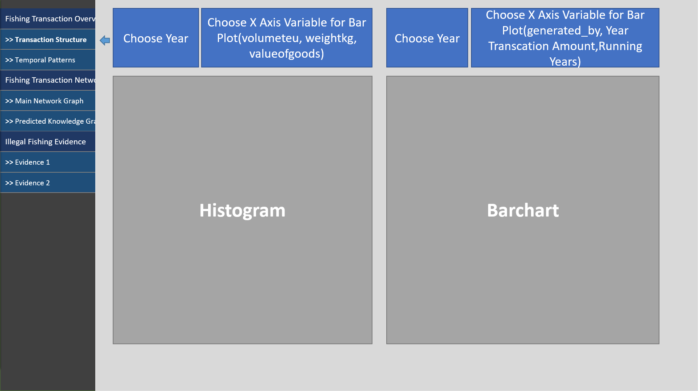
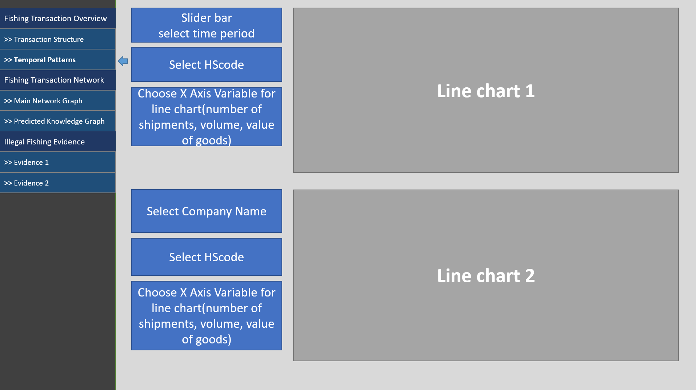
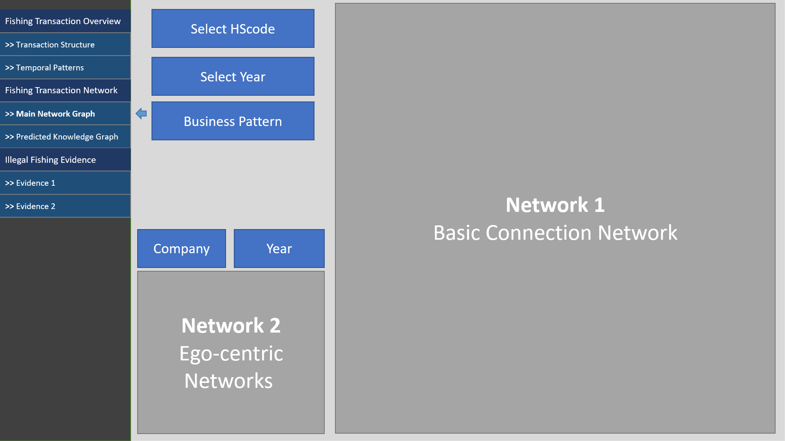
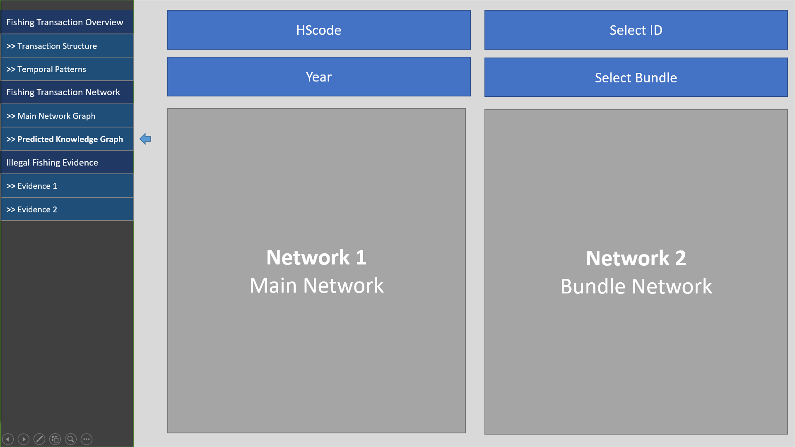
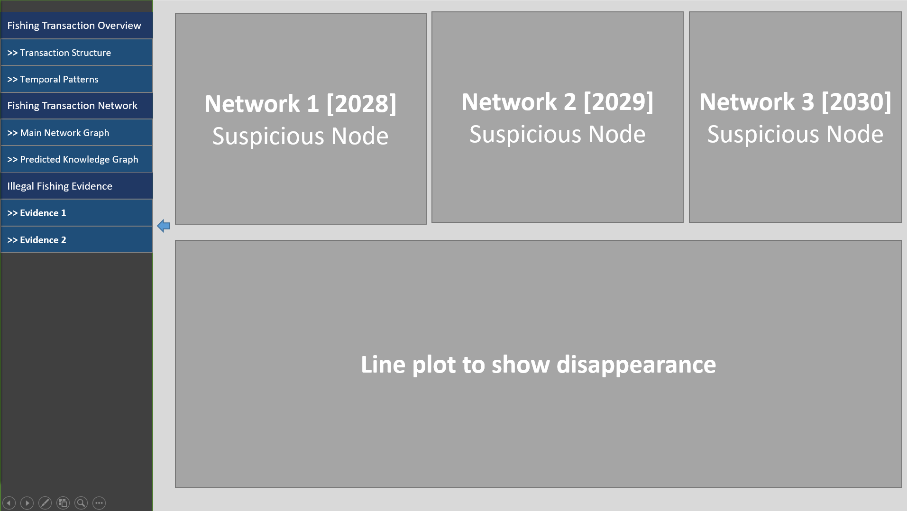

Proposal
1. Project Overview
1.1 Background
Seafood is the largest traded food commodity, providing sustenance to more than 3 billion people worldwide. The United Nations Food and Agricultural Organization estimates that 85% of fish stocks are either overfished or fully exploited (World Wildlife Fund, 2023). Given the reliance on fish supply, transshipment is an important part of the global commercial fishing industry.
In a study conducted by researchers from City University of New York’s John Jay College of Criminal Justice, it was found that 130 key carriers (approximately 22% of the total involved in the study) conducted 72% of detected “Regional fisheries management organisations” related transshipments. As seen from the image below, these transshipments typically happen across the ocean, with certain areas having a larger share of activity (The Pew Charitable Trusts, 2023).
Transshipment is defined as the practice of larger fishing vessels and those fishing within the high seas offloading their catch to fishing vessels while being resupplied with essentials such as food, water and fuel. Transshipments at sea helps to increase fishing vessels’ efficiency via eliminating the need to offload their catches at port while reducing overall operating costs. However, it also brings about the issues of enabling fishing vessels to obscure the catches origins which might have been caught illegally. (Boerder et al., 2018).
Illegal, unreported and unregulated fishing is a huge concern as it leads to serious social, economic, and negative environmental impacts (World Ocean Review, 2013). According to a study conducted by the Financial Transparency Coalition, it found that IUU fishing accounts for one-fifth of the global fisheries’ catches (equivalent to approximately $23.5bn) annually. Global losses arising from IUU fishing are also estimated to be approximately $50bn (Collyns, 2022).
Domain Knowledge Reference:
Illegal fishing tend to happened on the international sea area together with other illegal activities. (Gohar A. Petrossian*, 2022) Research found that illegal fishing activities in the area occurred at three levels, namely illegal fishing in communal networks, illegal fishing in associational networks and illegal fishing in industrial networks. The pattern of illegal fishing occurring in communal networks is done by small fishermen (peasant fisher) with the characteristics of the use of traditional fishing gear, small scale, limited area and relatively subsistence. In an associational network, the pattern of illegal fishing takes place on a wider scale, carried out by a post-peasant fisher with a more modern fishing gear, and involving local apparatus and officials. Meanwhile, illegal fishing in industrial networks is conducted by corporations involving high-ranking officials of policy-making countries at the central level, as well as by industry-scale entrepreneurs and fishermen.
1.2 Motivation
Given the global social, economic and environmental adverse effects arising from IUU fishing, we seek to gain a better understanding on the network activities of influential and key players, otherwise known as central actors who are involved in transshipment activities. The team look forward towards gaining a better understanding and analysing the key players involved in transshipment activities, as well as the overall network and spatial patterns by leveraging on R Studio and fundamentals of Social Network Analysis.
Identification of carrier vessels responsible for transshipment is the first step forward towards offering key insights and opportunities towards improving oversight on illegal fishing. With our insights gained, the team will then put forth recommendations towards how IUU fishing can be better managed and regulated in the longer term.
2. Data Source
There are 2 sets of data from the Mini-Challenge 2 of VAST Challenge 2023. The first set of data is called “mc2_challenge_graph” with further details on the specific attributes elaborated within Section 2.1 while the second set of data contains a set of bundle files as elaborated in Section 2.2.
2.1 Key Data Dictionary and Nodes
“mc2_challenge_graph” is a directed multi-graph, therefore it is possible for multiple edges between the same two nodes to exist. The graph format is saved as a json format, we will break it to match node-link format and make it compatible with network graph. Since it’s a network Graph data, there are links and nodes related to it.
| Node Attributes | Description | Action |
|---|---|---|
| id | Name of the company that originated (or received) the shipment | Keep and use |
| shpcountry | Country the company most often associated with when shipping | Keep and use |
| rcvcountry | Country the company most often associated with when receiving | Keep and use |
| dataset | Always ‘MC2’ | remove |
| Edge Attributes | Description | Action |
|---|---|---|
| arrivaldate | Date the shipment arrived at port in YYYY-MM-DD format | Keep and use |
| hscode | Harmonized System code for the shipment. Can be joined with the hscodes table to get additional details. | Keep and use |
| valueofgoods_omu | Customs-declared value of the total shipment, in Oceanus Monetary Units (OMU) | Keep and use |
| volumeteu | The volume of the shipment in ‘Twenty-foot equivalent units’, roughly how many 20-foot standard containers would be required. | Keep and use |
| weightkg | The weight of the shipment in kilograms (if known) | Keep and use |
| dataset | Always ‘MC2’ | remove |
| type | Always ‘shipment’ for MC2 | remove |
| generated_by | Name of the program that generated the edge. (Only found on bundle’ records.) | Keep and use |
2.2 Bundles
Each bundle represents the output of an AI program for link inference. Each bundle represents a list of potential edges to add to the main graph. Bundles have specific fish type such as carp, catfish, chub_mackerel, cod2, herring, lichen, mackerel, pollock, salmon, salmon_wgl, shark,tuna.
2.3 External Data Reference: Harmonised System Codes from Connect2India
As the dataset provided involves Harmonised Systems Codes (HSCodes), the team will also be leveraging on Connect2India HSCodes to gain a better understanding on the various HSCODE chapters and subchapters in order to understand which HSCodes are relevant for the study in relation to IUU fishing. Harmonised System Codes is an international nomenclature (at 6-digit) level developed by the World Customs Organisations specifically for goods classification (Singapore Customs, 2023). The team extracted the HSCodes and the associated information from Connect2India website via the link below:
• HSN Code 3 - HS codes of Fish, crustaceans, molluscs, aquatic invertebrates ne (connect2india.com)
3. Outline of Analytical Goals
In this proposal, the team will adopt a visual analytics approach to analyze trade records and identify temporal patterns and business relationship patterns among entities in the knowledge graph provided by FishEye. Our aim is to provide insights into the reliability of predicted knowledge graph links, and detect companies that are likely involved in illegal fishing, before finally ending off with a reflection on the learning points and key challenges faced during the project.
3.1. Temporal Patterns and Business Relationships:
Our first goal is to identify temporal patterns for individual entities and between entities in the knowledge graph FishEye created from trade records. We will leverage visual analytics techniques to uncover patterns and categorize different types of business relationships.
3.2. Evaluation of Predicted Knowledge Graph Links:
The second goal is to evaluate the reliability of different sets of predicted knowledge graph links provided by FishEye. Using visual analytics, we will assess the quality and accuracy of these sets, determining which ones are most reliable for completing the graph.
3.3. Identification of Companies Involved in Illegal Fishing:
We will utilize visualizations to identify companies that fit a pattern of illegal fishing. Through the application of visual analytics techniques, we will present the thought process and showcase our confidence in the identified companies.
3.4. Reflections:
Lastly, we will reflect on the team’s learning points and key challenges faced when working with the knowledge graph. The team will also highlight relevant tools and resources that are useful for future similar projects.
4. Methodology
The team will adopt the standard Data Analytics Process and methodology as following steps:
4.1. Background Research & Knowledge Acquisition
The team will perform research to gain a better understanding on the IUU fishing, various industrial HSCODE as well as the mechanism of international trade. With the research, the team will then be well equipped with knowledge on the most commonly found illegal fishing species.
4.2. Data Cleaning and Preparation
After a thorough understanding of the FishEye knowledge graph and the predicted links provided from the MC2 Challenge, the team will then proceed to clean the data by handling missing or inconsistent values to ensure the quality of the analysis performed subsequently. Besides, data wrangling will be implemented if necessary.
4.3. Exploratory Data Analysis
Within this stage, the team will be leveraging on static charts, plots as well as interactive diagrams to perform the relevant analysis. Below are some examples of possible analysis:
4.3.1. Basic Exploratory Analysis
This involves performing initial exploratory analysis to understand the data distribution, summary statistics, and identify any outliers or anomalies. Visualizations such as histograms, box plots, or bar charts can be used to visualise the distribution of attributes such as valueofgoods_omu, volumeteu, and weightkg.
4.3.2. Individual Entity Analysis
This section focuses on analyzing temporal patterns for individual entities (such as companies). This can help identify trends, seasonality, or changes in their shipping behaviour over time. The team can also consider analysing the arrivaldate attribute to understand patterns such as seasonality, growth trends, or sporadic activity for each company. Visualisations such as line charts can also be created to show the number of shipments, volume, or value of goods over different time periods (e.g., months, quarters, years) for each company.
4.3.3. Relationship Analysis
This section focuses on exploring relationships between entities (companies) to identify business relationship patterns. This can be done via the steps outlined below:
• Visualize the connections between companies using network graphs or Sankey diagrams, where the nodes represent companies, and the edges represent shipments (frequency, volume, weight, connectivity centrality etc) between them.
• Analyze the frequency, volume, or value of shipments between different pairs of companies over time to uncover patterns such as preferred trading partners or seasonal variations in trade relationships.
• We will use R shiny to allow selection and plot the network diagram for specific companies.
4.3.4. Categorization of Business Relationship Patterns
Based on the analysis results, the team can look towards categorizing the observed business relationship patterns. For example, the team might possibly uncover patterns such as consistent trading partners, sporadic trading, cyclic trading patterns between transshippments, fishing vessels and eventual buyers. The team will consider to leverage on Social Network Analysis tools via community/clustering detection involving Centrality, Group Components, Eigen Clustering to seek out the various underlying buckets of communities.
4.3.5. Trade Knowledge Based Analysis
The team will also delve into specific HSCODE groups and categories, which have a higher likelihood of being linked with IUU fishing, and zoom into the interactions between companies involved in the trade for such goods.
All in all, given the prevalence of IUU fishing being a global issue, the team believes in creating a tool and application to enable ease of visualisation to help with identifying companies that fit IUU fishing patterns. From the above mentioned items highlighted in section 4.3, the team hopes to be able to efficiently explore relationships between companies involved in IUU fishing, gleam insights into IUU fish trends before providing recommendations towards tackling the said global issue.
5. Proposed Visualisation & Project Prototype
The below prototype draft illustrates how the team envisions the eventual R-Shiny application will enable individuals to perform the relevant visual analysis.
- Basic Exploratory Analysis

- Temporal Patterns Analysis

- Relationship Analysis

- Relationship Analysis – Compare Predicted Bundles Data

- Illegal Fishing Evidence

6. Reference
Boerder, K., Miller, N. A., and Worm, B. (2018). Global hot spots of transshipment of fish catch at sea. Science Advance, 7(4), (link)
Collyns, Dan. (2022, October 26). Illegal fishing spurs billions in losses for developing countries, study says. The Guardian. (link)
Connect2India. (2020). HS Codes – Fish, crustaceans, molluscs, aquatic invertebrates ne (3). (link)
Singapore Customs. (2023). Understanding HS Classification. (link)
The Pew Charitable Trusts. (2023, April 19). Most global at-sea transshipment involves a small group of key carriers. (link)
World Ocean Review (2013). Plenty More Fish in the Sea?. (link)
World Wildlife Fund. (2023). (link)
Petrossian, G.A., Barthuly, B., & Sosnowski, M.C. (2022). Identifying central carriers and detecting key communities within the global fish transshipment networks. Frontiers in Marine Science 9.(link)
|